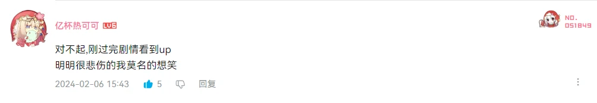
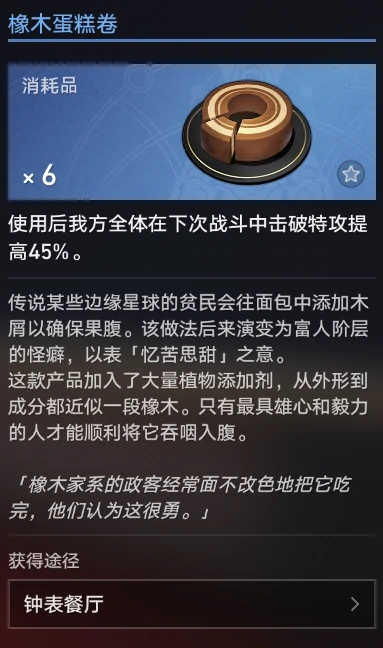
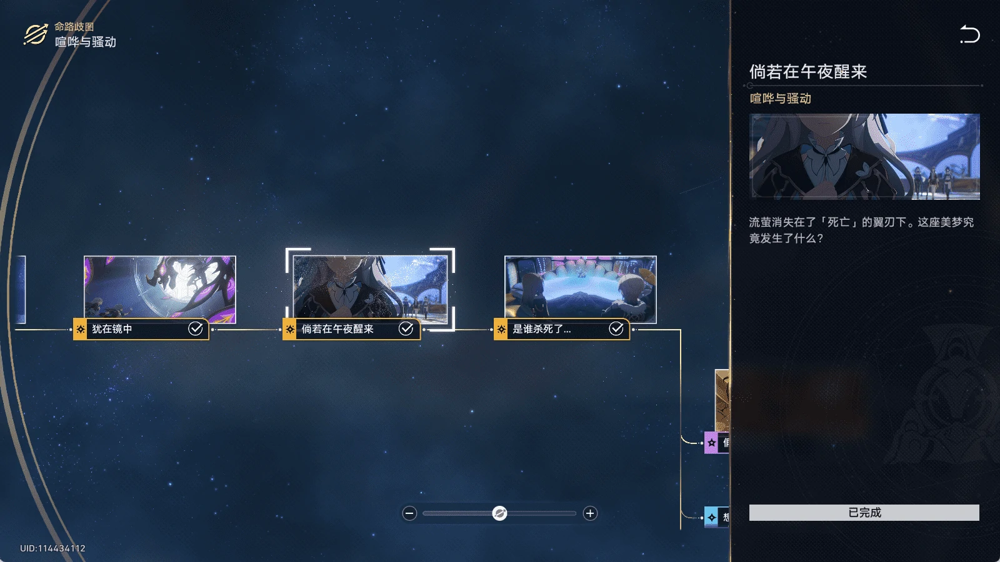

引言
↑使一颗心免于哀伤（点一下就行，会循环的）↑ 这首歌可以设置为车厢音乐哦
这首歌可以设置为车厢音乐哦
先看个好看的（BV1VK421C7dc）
有个评论：
首页刷到时心情同上🤣
再看一组对比图：
当我看到编剧是烧鸡时，心里：“稳啦，全部都稳啦”，当我看完2.0剧情时，心里：“稳 啦，全 部 都 稳 啦”（剧情质量和流萤的塑造），我现在得了每隔大约一小时就会叫一句“我的流萤”症，使一颗心免于哀伤循环了一天，怎么办，在线等。
剧情整理
咳咳，说正经的。目前这个情况，我不好分析，就先整理一下信息（疑点）吧。剧情回顾
流萤的的戏份在任务：无眠之夜-任务：倘若在午夜醒来，用时（根据泛音的视频）126分钟左右，占总时间285分钟的44.21%，这就很奇怪了，作为当前版本的非up角色能占这么多篇幅（黑天鹅和花火表示很淦）（甚至没有讲完），可见流萤在匹诺康尼的剧情中占的重要地位。我们还有许多佐证：她有一首剧情配乐《使一颗心免于哀伤》，是第一个被“刀”的角色，等等。下面整理流萤的信息。
偷渡的，目击报告是“银色的家伙”，有可能是萨姆，但根据后面这个伏笔没多少说服力，台词“不然我可能真的要......被抓走了”（有弹幕说是“要变身了”，感觉有点扯），崇拜无名客（相信钟表匠是无名客的说法），身份是鸢尾花家系的艺者（临时演员）兼职向导工作，喜欢吃橡木蛋糕卷，每天一个（弹幕：注：描述中的橡木蛋糕不像常人能吃的，疑似流萤味觉存在伏笔），台词“倒也谈不上悲伤。只是…这梦境太过博爱，太过宽容了。”“它浩瀚，又深沉。像一片海洋，就连籍籍无名的小人物也可以安眠其中。”“…我真的很感谢，你选择出手相助。也因此，我才能向你介绍这座乐园——它愿意接纳我，尽管我不属于这里。我也爱它，所以才想要…同别人分享。”“你说得对…但人们无所依靠时，总归会想要找些什么来安慰自己的。”“意犹未尽的梦……”（爱德华医生处，流萤应该是没有过这种经历）“对，就是那个卡通人物…好像出现在了现实——我的意思是——梦境里。”（弹幕：这句话的意思是不是流萤只在梦境里呀）“它就在那里，永远散发着耀眼的光芒，就像这五光十色的美梦本身。”“我想，沐浴在光中的人，一定都会被那种温暖所吸引吧……”“…就像无数追逐火焰的飞萤。”（点题意味）（弹幕：逐火之蛾）患有失熵症（见下）目的是「钟表匠的遗产」，知道忆质且对它有感知能力“无论如何，我们一定还在梦里，而非别的什么地方，更不可能是现实…空气中有忆质独特的触感，我不会认错的。”跟何物朝向死亡第一次打时过场cg有（弹幕：手部动作推测：流萤想做些什么打破局面，但出于某些原因放弃了）
观察能力很好，人挺聪明，身份不简单，证据：偷渡的（偷渡的肯定要善于潜行吧），注意到爷是无名客，骗到了爷（但爷其实挺好骗的），观察极其细致“他身高大约一米八上下，误差在两公分以内，体格健壮，明显锻炼过。步幅很长，但听不见踏地声，很轻巧。这种步法不会留下脚印……”“…看来他很擅长战斗——隐秘的那种。他手掌宽大，但手指细长、灵活。我猜他习惯用刀。短刀，匕首……”爷跟桑博对话时溜了（还挺远）“…小心。现在我可以确信，你的这位朋友有问题。”“诶哟，看来这位勇敢的小姐想保护你呀，为什么？你们关系有这么亲密么？”“废话少说。”“我太喜欢你的性格了，亲爱的。我承认，你和那小灰毛不一样，鼻子还算灵敏。”跟何物朝向死亡第一次打完时过场cg中流萤拉爷离开（弹幕：流萤这里比爷都还冷静）
高潮段1
高潮段1：这一段的bgm是动态的、交互性的，和剧情配合得很好。同时，运镜丰富且合理，表达力，感染力都很强，特别是最后拍照实在是太犯规了啊啊啊啊啊啊啊啊（发电）
高潮段1的台词：
- 你听过这首歌吗，《使一颗心免于哀伤》，那位知更鸟的作品。谐乐大典在即，梦境中偶尔也会奏响她的音乐。
- 这里是离梦中的天空最近的地方，远离城市的喧嚣，也没有筑梦师的争吵。可以不被任何人打扰，感受当下——当下的风景，人，还有梦……
- 多美啊…时光永远停驻在这黄金的时刻，一场金色的梦。酒馆的愚者和忆庭的忆者，流浪的游侠和公司的使节，星穹列车的无名客…和我。
- 所有人在这里平等地睡去，无论缘由，尽管我们确实各怀目的……
- ……
- …对不起，{玩家名}，我的确是一个「偷渡犯」。
- 我的故乡在很久以前就毁灭了，也许是军团干的，也可能是虫群…我是个星际难民，就和匹诺康尼的许多「本地人」一样。
- 「同谐」包容所有的人，也包括那些远道而来的漂泊者。家族接纳他们，但他们…终究不属于这里。
- 在这座金碧辉煌的大都会中，有些人的梦名为匹诺康尼，而有些人的梦…却和现实无异，尽管每一个来到这里的普通人，最初都怀抱着相同的目的。
- 我也一样。现实里的我有着求而不得的愿望——它太过强烈，因此我诉诸梦境……
- 选项：我能够理解。/是什么愿望？/不能逃避现实。
- …「失熵症」。你听说过这个词吗？
- 是一种奇怪的现象。罹患这种病症的人，物理结构会陷入不可逆的慢性解离。这意味着你正在慢慢消失，而这种「消失」在旁人眼中甚至难以察觉——（弹幕：萤火虫…只有短短七天的寿命，但却要努力地绽放光芒）
- 你依旧能跑、能跳、能和他人交流。一切看起来都那么正常，只不过你总是比别人慢一点点……
- …然后越来越慢、越来越慢，直到自己和整个世界的轮廓都变得模糊不清。你分不清现实和梦境，因为它们变得同样破碎。
- 所以，我该如何拒绝呢…你能想象吗？在这场梦里，我竟然可以…可以不用待在冰冷的「医疗舱」里……（有人说萨姆的机甲就是医疗舱，因为医疗舱打了引号）
- 我可以将医生的话抛在脑后，用我自己的身体，随心所欲地去听、去看、去触碰、去思考、去领会。尽管这个世界并不真实，但这感受却无比珍贵……
- …就像此时此刻。
- 对不起。因为一些原因，有些事…我现在还不能向你全盘托出。但也有些事，我应该对你坦诚。
- 「钟表匠的遗产」固然是我的所求，但我们未必要分道扬镳，走向对立，至少…我不希望这种事发生。
- 「我梦见一片焦土，一株破土而生的新蕊，它迎着朝阳绽放，向我低语呢喃。」（流萤的希望/梦想）（弹幕："当花叶呢喃之时，请呼唤我的名字"）
- 还记得邀请函上的问题吗——生命因何而沉睡？（流萤知道邀请函的密语）
- 你看，在这片梦想之地，一切都被允许，一切都有可能。不堪回首的过去像泡沫一样散去，不愿面对的明天永远也不会到来。
- 人们为何选择沉睡？我想……
- 是因为害怕从「梦」中醒来。
高潮段2
高潮段2：哎呀来了，首先照应前文“人们为何选择沉睡？我想……”“最后的轻叹不知是谁发出的。”“…是因为害怕从「梦」中醒来。”然后渲染紧张气氛“…小心！附近有危险的气息。”“…各位，保持警惕。”。可以看到很快啊，boss先tp，冲向流萤，扔向空中，转一圈，视角给到流萤脸，一刀，三个脸闪过，“对…不起……”刀插得更深（真**出生）流泪，稍微拔出来一点，扔下去，喷水（让你喷水不是这样喷水啊喂），球棒掉了，爷上了，要接住，尸体爆了（弹幕：注意看，流萤这里身体前有粒萤火飘出！！）（弹幕：流萤成流萤酱了），爷顺势跪下，摆架势，boss又tp走了，结束。（弹幕：开拓者：我什么都做不到；密码正确，账号错误，登录失败；理解奥托，超越奥托）整个过程持续40秒不到，再加上背景的小提琴，可谓是一个暴击。之后黄泉甚至有悼词“愿死亡结束你漫长的梦……”“引领你归还…清醒的世界。”还有爆金币“半部快要消散的手机躺在地上，残留着一条没有发出的消息…一张合照，照片上的两个人笑得很开心。”“手机彻底消散了，化为梦泡消逝而去。”
复盘
之后是复盘（死亡回放），对话整理如下：
- 当时和{玩家名}遇见的那个东西……
- 如果我没猜错…它一定和「钟表匠」有关。
- 她提到了你的名字。
- 在背后也这么称呼，看来你们的关系确实不错呀。
- 她似乎在和什么人分享自己的发现，而且…和「钟表匠」相关。
- 她还不知道自己会成为受害者……
- 如果，能再来一次……
- 她盯着这些屏幕，是在照镜子吗…「再来一次」是什么意思？
- 冷静，流萤…冷静一点……
- 她看起来…很紧张。
- 是啊。是什么让她这么紧张？
- 我们出发吧……
- 「我们」？她身边还有其他人吗？
- 综合这些信息，流萤是和同行者——应该只有一位——一起进入了这条长廊。
- 你怎么…？！这和说好的不一样……
- 情况开始变化了，似乎那位同行者…背离了原先的计划。
- 或者，从结果而言…这才是那个人真正的*计划*。
- 机甲…？！为什么……
- 她被什么人逼迫着走了这边，而且……
- 「机甲」…耐人寻味的说法。我记得猎犬家系在追捕这么一位罪犯——「身穿银色盔甲的高大男性」。
- 门…打不开…这里是死路……
- 从这些只言片语推断，流萤的同行者中途背叛，把她一个人关在这个房间，而自己不知所踪…为什么？
- 她说过，这场交易和「钟表匠」有关——涉及钟表匠，就会触碰许多人的底线。
- 也许是想要侵吞遗产，也许是为了让知情者再少一人，也许…是因为这片忆域中隐藏更深的*秘密*，而为了钓起大鱼…需要浮饵。
- 你的意思是…流萤？
- 这只是一种最坏的假设。但不妨想想，如果这一切的始作俑者就在附近，他为何会放任我们四处搜查？除非……
- 除非他还有更在意的事，需要——或者说，正在确认。
- 她没有别的路可走，只能从侧廊离开。
- 这里竟然有路……
- 变幻莫测的通路，指向游荡的忆域迷因…她完全迷失在忆域中了。
- 是出口…沿着这边应该能离开……
- 可惜这条路，最终通向「死亡」的巢穴……
- 总算回到大堂了，这样就……
- 她以为逃出生天了，但……
- ……
- 然后，就是结局了……
黑天鹅的话诱导成分比较大，但事实应该是对的。
分析
目前网上流行这么个说法：流萤和萨姆是同体的，虽然我觉得很离谱，但也不是不行但有很多证据。不过我偏向于流萤和萨姆有很大关系，不可能是同一个人（艺术上的，具体一点是“人格”，就是性格）。还有的人猜米沙有问题。改放的视频 果子哥的视频
还有一些有意思的评论：
@appocai(523742941)
:
流萤被刀一段翻来覆去看了好几遍……
那个怪物第一刀是直击要害的（心脏），但是此时流萤仍能说话，怪物就继续补了一下，所以流萤挨了两刀。
如果换成刀具的话，第一刀一般也是直击心脏，但是第二刀就不是继续向纵深捅而是扭转，因为这样能尽可能扩大创口以降低治愈希望。怪物是尖刺，所以扭转没有用，只能通过继续向纵深捅扩大截面以扩大创口。
总之这个鲨法还是挺专业的。[脱单doge]
这是在梦境里面，所以流萤直接即死。如果现实这么来一下，流萤被甩下来之后在激素支持下还能活一小段时间。虽然心脏被彻底破坏，但是大脑缺血导致死亡仍有一小段时间，这段时间内流萤意识可以维持，但是应该讲不了话，因为胸腔被开那么大个口子肯定气胸了。肺部应该也损坏了，可以做口型但是不能发声。但如果现实中的话那个出血量会相当吓人……你可能会问我为什么会解析这个动作……之所以解析是因为这跟战地一里面从敌军左侧进行刺刀冲锋的效果有着极高的相似度……第一刀直通心脏，之后会挺进并扭转，完成后会一脚将对面踹开并拔刀。而且离谱的是锐器进入身体导致内部碎裂的音效也很像……
@慕容苍涯(296848367) :这次剧情还蛮有意思，仔细看就会发现，整个匹诺康尼入局的人很多，但是真正被大家伙推到台前的，只有倒霉的开拓者。大家伙要么有求于开拓者，要么想利用开拓者，要么针对开拓者，要么跟开拓者关系不错，现在登场的这一堆人，都是被开拓者联系在一起的，我甚至感觉整个匹诺康尼就是银河的缩影，各种各样的势力纷繁错杂，但是站在最台前的一般都是开拓者，而开拓者们也确确实实的在寻找未知和结交朋友
@阿比酱世界第一可爱_(6888228):
她流萤很喜欢你，她攒了很久的钱才舍得吃三千信用，点的蛋糕，却舍得给你花两万块钱吃饭，还要带你参观景点，一起去秘密基地，即使是拍照也要先问问你的意见
你的世界里来来往往很多人，但是流萤的世界里好像只有你进去了
你为流萤流眼泪，流萤很高兴，因为她知道你的心里有她
你不为流萤感到难过，流萤很高兴，因为流萤很喜欢你，她不希望自己成为你的负担
借用奥托的一句话:不被欢迎的她遇见了乘坐列车而来的你，在那一刻，那名少女获得了她一生的救赎
@-Water-Drop-(364350492) :mhy这个互动音乐有一手的，bgm和剧情卡点卡的简直完美（野火都没那么完美的感觉），在说完沉重话题之后人声和吉他渐淡，只留下钢琴伴奏，bgm变缓，然后在拍照的时候又渐强，这种气氛的渲染简直像看番一样
@六相冰
(1592391655):总觉得流萤最后的一句对不起有深意，角色都还没出，不会这么早刀没吧。
那句对不起，或许是代表她还没死，但是现在她需要“死”一次，道歉是为了因为骗了我“死”了。
美梦破碎，绝望「轮回」。开始黄泉的话也意有所指，说不定，匹诺康尼出问题了，跟花神诞祭一样，有人导致了梦境的破碎，并且不断循环，需要我们找到突破的契机。流萤的“对不起”是指她知道这件事，但不能说。后续“无意间”漏出关于她“黑暗”的一面，粉切黑。最后再透露出，她确实是为了拯救大家，粉切黑切粉。[墨镜]
@maximilianobi
(348971494)1. 流萤知晓邀请函中的密文信息，隶属于受邀前来匹诺康尼的某支势力。在开拓者抵达匹诺康尼时的梦境中，包括星核猎手在内的来访者均有登场，但是没有出现流萤。
2. 猎犬认定萨姆为偷渡客，却错抓了流萤。流萤有鸢尾花家族的合法身份，却被星期日认定为偷渡客。偷渡客应当被理解为不利用白日梦酒店的硬件进入匹诺康尼梦境世界的个体。
3. 无名客从银狼处获得了梦境酒店的坐标。萨姆作为星核猎手在侵入匹诺康尼过程中得到过银狼的帮助，而流萤与萨姆在梦境酒店中同行过。
4. 流萤企图调查并获得钟表匠的遗产，并且带着目的接近开拓者并干预不同势力的活动。如果她属于星核猎手阵营并且按照剧本行动，为什么她的同伴不是精于攻心的卡夫卡而是直率粗暴的萨姆呢？
5. 在星核猎手成员透露的信息中，不存在一位名为流萤或与流萤类似的成员。流萤没有通缉令。
6. 流萤在梦境酒店的调查中表现的情绪化而莽撞，这或许导致了疑似为萨姆的同行者将她锁在房间里。流萤遇害后，萨姆没有继续调查，而是泄愤似的大开杀戒，并与黄泉等人开战。
7. “死亡”有目的地绕开他人对流萤进行刺杀。星期日证实了幕后黑手策划了袭击。
8. 黄泉知道的信息比她透露出的要多的多，她并未将“死亡”作为敌人拔刀。之后重复念叨的“回到清醒的世界去”又有何深意呢？
总而言之，这次剧情我挺满意的，别忘了回到流萤的秘密基地，你会看到：
剧透警告，最好自己上号去看
- 视野绝佳的观景台，几乎能将整个筑梦边境的景色尽收眼底。
- 这确实是个不容易发现的地方。向你介绍这里的人一定非常珍视你们的关系、才会把这幅美景与你分享。
- 你回想起和那个女孩共度的时光，她柔软的笑容，她轻盈的步伐，以及她最后一刻、被那怪物斩杀时留下的泪。
- 那个时候，她为什么要说「对不起」呢？她脑海中所想的会是什么呢？倘若你们动作再快一点的话，那傻丫头是不是就不用死了呢？
- 一股酸涩从你心底油然而生，随后是愤怒的火焰——足以将最坚固的金属烧成灰烬。
- 面朝栏杆与高楼，你握紧了拳头……
题外话
（2024年2月8日21点18分，过剧情2天后）其实这段剧情也没什么特别痛苦的地方，主要就是意难平，更不如说是对后文的期待，我们明确知道流萤能活，后面会更刀，但剧情卡在这里一个多月（2.0版本延期），总会使人难受。就算再怎么分析，期待，猜测，这段剧情所蕴含的情感是最真实的，当时玩家得到的体验是最真实的，不管怎么发展，结局如何，故事最重要的就是过程中展露的情感和思辨。这一点在往事乐土里烧鸡已经说过了，这次匹诺康尼像是乐土的继续（不管怎么说精神内核不变），我们也乐意看到有这么一股歌颂美好的力量。
对于那些利用这次剧情攻击崩铁的人，我只能说，在态度上，应当“做好自己的事，有何必在意恶意的人呢”，在行为上，应当“做自己能做到的事，比如勤举报”
（2024年2月10日17点23分）贴一个好像挺靠谱的分析【保证看懂！崩铁2.0剧情解析+时间线梳理！深度复盘匹诺康尼梦境狼人杀！】 https://www.bilibili.com/video/BV1bA4m157mx/?share_source=copy_web&vd_source=1c40c215f7d7c445687d467a7a8fe402
参考阅读：萌娘百科还是萌百最快（bwiki和官方wiki都还没有流萤的页面（现在是2024年2月7日22点02分）